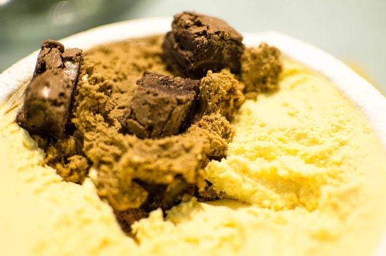
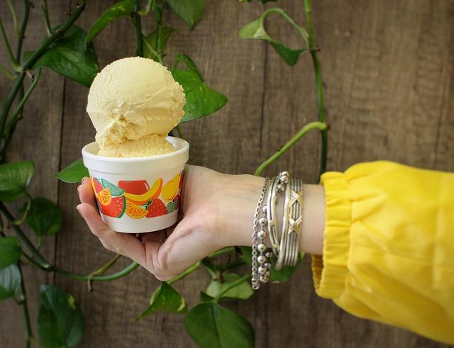
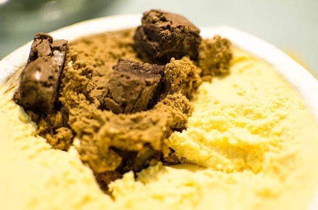
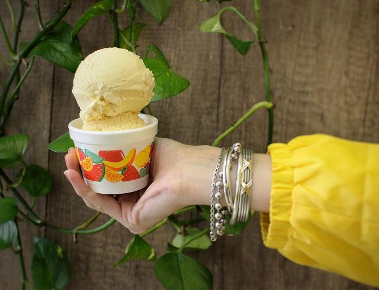

Nuestra Historia
Sobre Nosotros
En 1998, en el corazón de Buenos Aires, nació una pequeña heladería artesanal que pronto se convertiría en el clásico de Palermo. La historia comenzó con dos amigos de la infancia, Martín y Ana, quienes compartían una pasión por los helados de calidad y decidieron crear algo propio. Al principio, la heladería era muy pequeña y solo ofrecía unos pocos sabores de helado. Pero con el tiempo, la reputación de "Punto Rosso" comenzó a crecer hasta convertirse en un destino popular para los amantes del helado artesanal.
Los dueños siempre se enorgullecieron de utilizar ingredientes naturales y de alta calidad. A medida que la heladería crecía, los amigos también comenzaron a ofrecer sabores más creativos y únicos, como el Hibiscus Lemon y el Rooibos Caramel-Vainilla.
A pesar de los altibajos de la economía argentina, la heladería siguió creciendo y prosperando a lo largo de los años. Hoy en día, "Punto Rosso" sigue siendo una de las favoritas de los palermitanos, ya que es conocida por su compromiso con la calidad y la creatividad. La heladería ha crecido mucho, sin embargo para los dueños lo más importante es la felicidad y la satisfacción de sus clientes, quienes siguen regresando una y otra vez para disfrutar de sus deliciosos helados.


 




Nuestro Equipo
Martín

Apasionado por su trabajo, siempre busca ofrecer la mejor calidad y sabor a sus clientes. Es un emprendedor perseverante y dedicado que ha logrado hacer de su pequeño negocio un gran éxito en el barrio de Palermo.
Ana

Dedicada y perfeccionista, siempre busca ofrecer los mejores sabores y texturas en sus helados. Su amabilidad y carisma le ha permitido que su heladería se convierta en un lugar acogedor y entrañable para los amantes de los helados.
Leticia
Enérgica y entusiasta, contribuye a que la heladería sea un lugar agradable y acogedor. Es una persona comprometida que disfruta de la interacción con los clientes y de ser parte de un equipo que comparte su pasión.
Julián Álvarez 2486 - Palermo
Tel: (011) 4826-4437
Horario:
Domingos a Jueves de 12 PM a 12 AM
Viernes y Sábados de 12 PM a 01 AM
Julián Álvarez 2486 - Palermo
Tel: (011) 4826-4437
Horario:
Domingos a Jueves de 12 PM a 12 AM
Viernes y Sábados de 12 PM a 01 AM